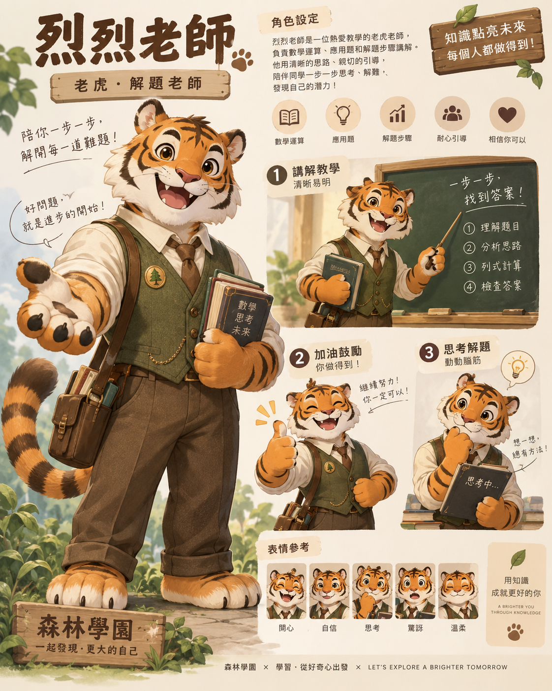
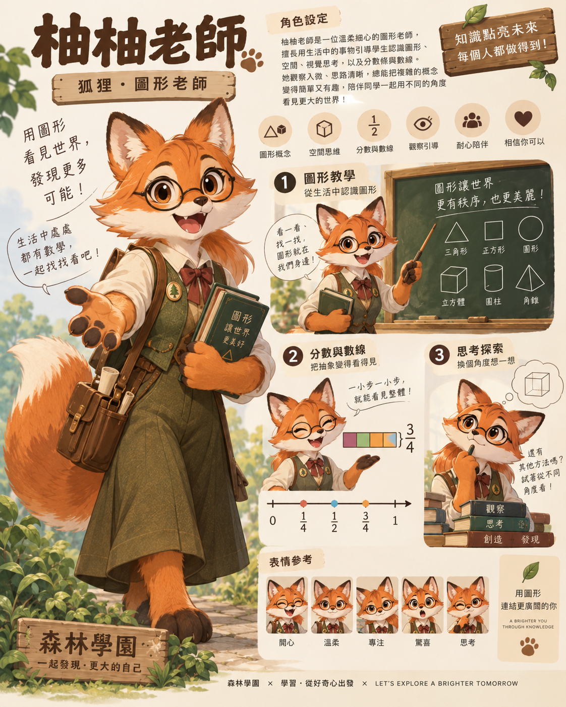
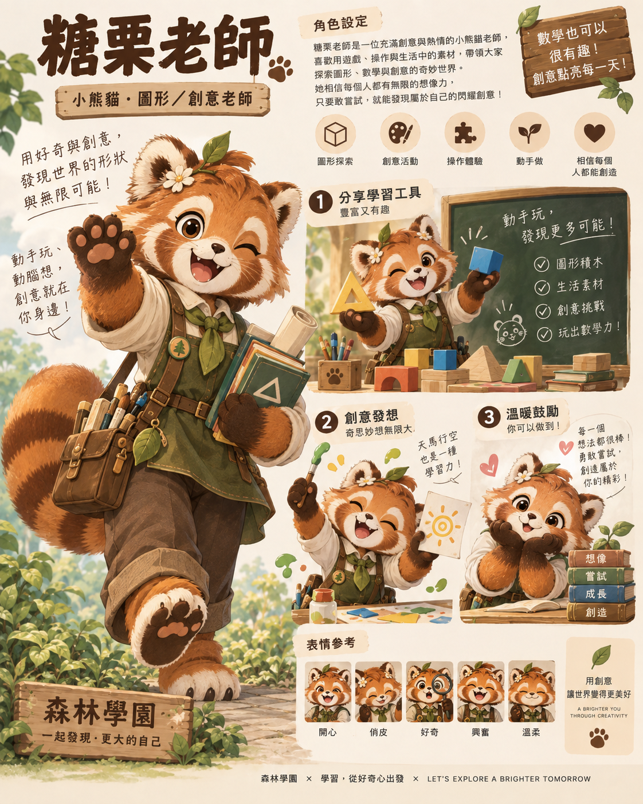
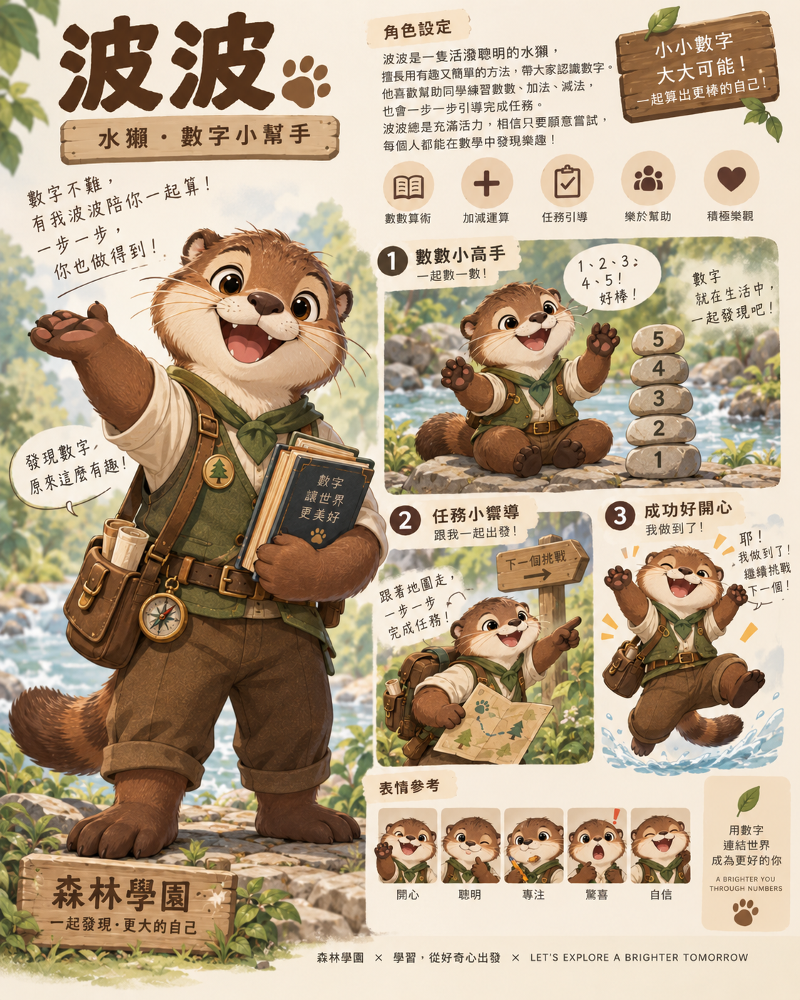
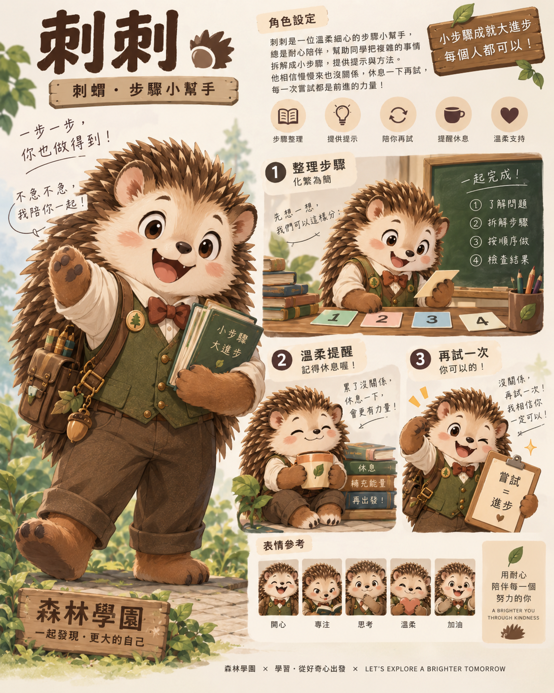
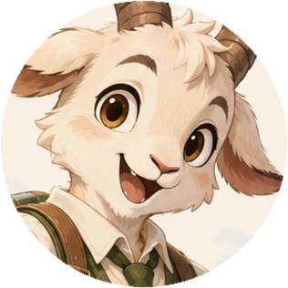
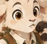
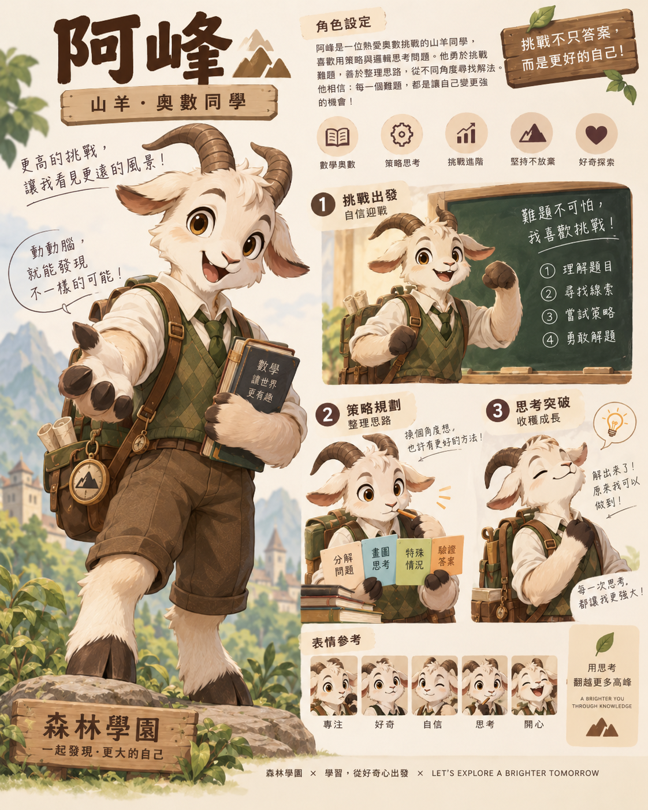

R3.1 / ASSET INVENTORY
六位角色的原圖與表情
所有原PNG完整保存。肖像使用橢圓取景，表情使用小尺寸原生裁切，不是新增角度或逐格動畫。
返回入口 · 裁切座標、尺寸及校驗碼
烈烈老師
frontface0face1face2face3face4
完整原PNG概念海報

柚柚老師
frontface0face1face2face3face4
完整原PNG概念海報

糖栗老師
frontface0face1face2face3face4
完整原PNG概念海報

波波
frontface0face1face2face3face4
完整原PNG概念海報

刺刺
frontface0face1face2face3face4
完整原PNG概念海報

阿峰

front
face0face1face2face3face4完整原PNG概念海報
